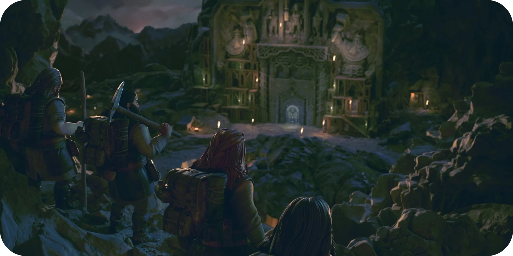

The Lord of the Rings: Return to Moria™
Visão Geral
O único jogo de criação e sobrevivência ambientado na Quarta Era da Middle-earth™, o icônico mundo da fantasia criado por J.R.R. Tolkien. The Lord of the Rings: Return to Moria segue os Anões enquanto embarcam em uma nova aventura para recuperar Moria, a lendária casa sob as Montanhas da Névoa. Os jogadores unirão as forças para sobreviver, fabricar, construir e explorar as icônicas minas em expansão. Os aventureiros valentes precisarão ser vigilantes, pois diversos mistérios perigosos os aguardam. Recupere Moria, a terra natal dos anões
Convocados para as Montanhas da Névoa pelo Lorde Gimli Lockbearer (Portador da Mecha), os jogadores assumem o controle de uma sociedade de Anões encarregada de recuperar os espólios perdidos nas profundezas da terra natal dos Anões de Moria — conhecida como Khazad-dûm ou Dwarrowdelf. A busca exigirá coragem, indo fundo nas Minas de Moria para recuperar as riquezas.
Situado em um reino de Moria gerado de forma procedural, duas aventuras nunca serão iguais. Cada expedição pode ser feita a sós ou on-line com amigos. Os jogadores poderão extrair para criar equipamentos melhores e recursos, mas cuidado com a mineração: ela faz barulho, o que pode atrair perigos. Onde tem barulho, tem combate. Escave os mistérios dos três picos lendários, extraia metais preciosos e combata forças indescritíveis para aprender o segredo da Sombra que se espreita por dentro.
Características principais do jogo:
-Sinta a Sociedade: vivencie a Sociedade dos Anões como nunca, com a rica tradição do icônico mundo da fantasia de J.R.R. Tolkien entrelaçado na própria estrutura de The Lord of the Rings: Return to Moria.
Este jogo é
ótimo para iniciantes
Este jogo é
altamente recomendado
Este jogo é
ótimo para iniciantes